Creating a social sharing and cloud storage platform that stands out from the pack.

The Problem
Invent, design and brand a cloud storage app with the following desired features:
- Saving content found on the web (links, images, videos, etc.)
- Organizing that content
- Creating new content
- Uploading files from a personal device
The Solution
Gather: a place for both people and content to gather, connect and intertwine.
- Add content from the web using its URL or a browser extension
- Organize content into folders and chronologically
- Create new photos or videos directly from your device
- Upload content from any device and edit its image and info

Our mission was to provide a calming space for productivity and play. Combining aspects of successful apps, within gather, the user will be able to create content on-the-go, save from the web, send, share, chat and organize. The best part? Everyone can use gather in their own way. Whether you want things to be just for you, for friends, everyone or a combination: we’ve got you covered.
Research
After surveying 29 participants, it was clear that people were looking for a social platform with images and videos to explore, while having the flexibility to keep things private, to their own friends or public.
Main Takeaways:
- From social media platforms, Pinterest, Instagram and Snapchat were the top used
- People save Favorite Sites, Articles, References and Videos the most on their bookmarks in a browser
- People mostly posted photos, videos and art to social media platforms
View the survey and results here.
Competitive Analysis
Knowing I would be creating a social sharing platform, I researched three companies that do just that: Pocket, Instapaper and Pinterest. For this, I performed a SWOT analysis.
- Users enjoy visually stimulating content (pictures > words)
- These platforms focus either just on articles or just on photos and videos, neither on both
- Many platforms that tried to focus on text-based content no longer exist
View the full SWOT analysis here.
User Personas
People can use Gather in different ways, but our target audience is looking for the same main goals:
- A source of inspiration
- A place to save and create content
- A way to link that content to personal, actionable, sites
User Stories
From my research, I was able to determine the various tasks that were integral for the user, organized by priority level.
High Priority
- Sign up for an account
- Sign into an account
- Upload content
- Save content from the web
- Share one item
- Share a folder/group of items
Medium Priority
- Delete a saved item
- Find a saved item
- Organize content
- Create new content
Low Priority
- Find new people to follow
- Find new tags to follow/li>
- Comment on items
User Flows
User Flows is a very important step in the creation process of any platform. Understanding where your user needs to go when, is crucial to determine before creating the wireframes, prototypes and final pieces.
Branding: Name, Logo & Color Palette
I wanted to create a place for both people and content to gather, connect and intertwine, which is how the name, “Gather” came to be. The logos and color palette came naturally as soon as I had the brand philosophy in mind.
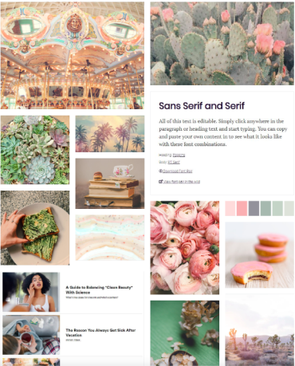 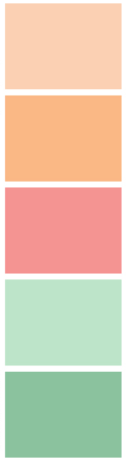
View the full branding guidelines here.
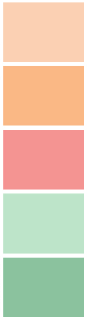
View the full branding guidelines here.
Wireframing
Going from quick sketches, to lo-fi to hi-fi versions, my designs went through a lot of cycles of feedback and designing.
Sketches
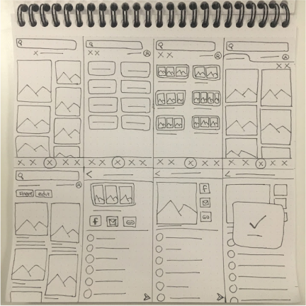 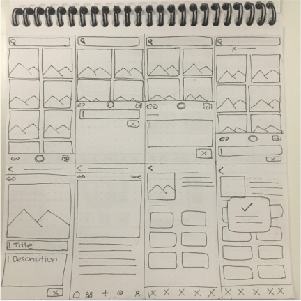LoFi
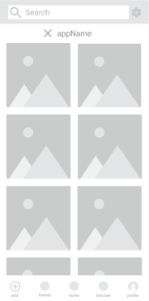 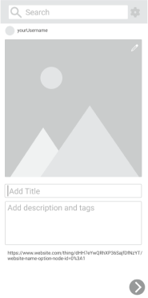 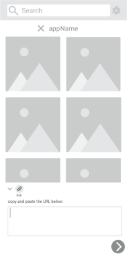 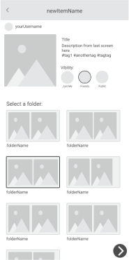 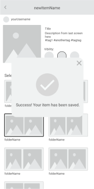HiFi
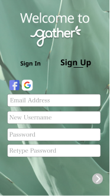 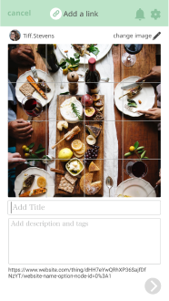 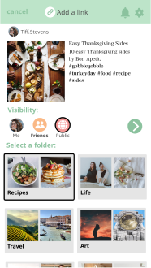 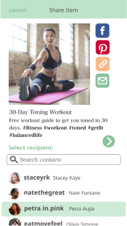 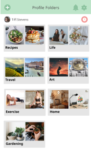Testing
I tested my low and high fidelity prototypes to six users, all garnering information that helped me further my designs. Through this User Testing, Preference Testing and Grader Feedback, rounds of changes were made.
- Removing unnecessary text
- Adding more options to share
- Eliminating a search bar on each screen
- Not having the full logo/app name on each screen
- Overall logo design
- Adding a full logo instead of just a simple “g”
- Avoiding the use of coral text and using green, black or grey
Three preference tests were also conducted to help answer some detailed design questions that naturally arose through the design process.
Iterations
From all the gathered insight and feedback, I was able to go from my initial wireframe sketches to my final hi-fi screens (and prototypes).
Takeaways
- Designing for both desktop and mobile while maintaining proportional spacing and congruence
- Creating a logo from rough sketches to vector files
- Being able to take a project from start to finish, utilizing all UX steps
- Not all feedback is as helpful as others, so it’s important to survey and test as many people as possible